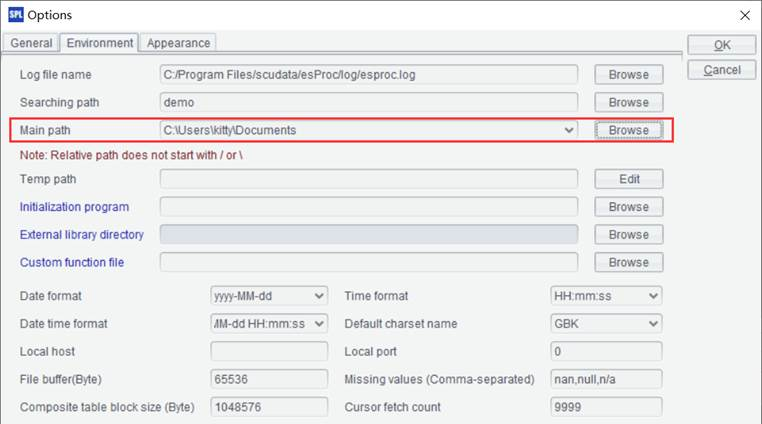
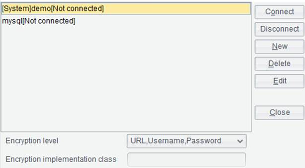

This is an esPoc Enterprise edition feature.
This item is located under Tools menu. It lets you connect to the various remote storage platforms. Once the connection succeeds, you can perform operations on files on the remote storage platform through Qfile, Qmove and Qload functions in a SPL script.

【Default remote storage】: The Remote Storage Service allows you to connect to multiple remote storage platforms at the same time. When the above functions, such as Qfile(), are used in IDE, the system will connect to the remote storage platform selected after “Default remote storage” for the computation. If the property is left blank, won’t connect to any remote storage platform.
On Remote Storage Service window, select a remote storage type, which supports “Amazon S3”, “NFS”, “HDFS”, “Microsoft Azure”, “OSS” ,”Mount” and “Google Cloud Storage” for the time being.
Then click “New” button to get into Storage Service Settings window, where you can set up connection information related to the corresponding remote storage platform.
To begin the setup, you need to first copy the jar files used by the remote storage type under 【esProc installation directory】\esProc\q-extlib into【esProc installation directory】\esProc\lib. To configure settings for Amazon S3, for instance:
You need to copy the jar file in s3 directory under【esProc installation directory】\esProc\q-extlib into【esProc installation directory】\esProc\ lib, and create a new storage service settings connection:

【Enable cache】: Whether to enable caching to generate a cache file when reading a data file stored in a remote storage platform. First read the cache file when the “Enable cache” option is checked.
【Cache path】: To perform file computations on a remote storage platform, the file object is by default automatically downloaded to cachePath/storeType/bucketName. The cache path is by default the system’s cache directory, such as C:\Users\UserName\AppData\Roaming\__scudatacache\s3.
【Min available space】: The minimum available space in the directory containing the cache files. When the available space is less than the specified minimum amount, cached files in the directory will be automatically deleted.
【Cache block size】: Specify the size of cache block.
Note:
1. When the remote storage type is “Google cloud storage”, put the corresponding jars in google-gcs directory under【esProc installation directory】\esProc\q-extlib. And add a Java proxy parameter: Djava.net.useSystemProxies=true, in the startup file, such as IDE’s startup file starup.bat, for “Google cloud storage” type:
@echo off
call “D:\raqsoft\esProc\bin\setEnv.bat”
start “dm” %EXECJAVAW% -Xms128m -Xmx9444m -cp %START_HOME%\esProc\classes;%RAQCLASSPATH% -Duser.language=zh -Djava.net.useSystemProxies=true -Dstart.home=%START_HOME%\esProc com.scudata.ide.spl.EsprocEE
2. Put corresponding jars in nfs directory under【esProc installation directory】\esProc\q-extlib when the remote storage platform is【NFS】.
3. Put corresponding jars in hdfs directory under【esProc installation directory】\esProc\q-extlib when the remote storage platform is【HDFS】.
4. Put corresponding jars in azure directory under【esProc installation directory】\esProc\q-extlib when the remote storage platform is【Microsoft Azure】.
5. Put corresponding jars in oss directory under【esProc installation directory】\esProc\q-extlib when the remote storage platform is【OSS】.